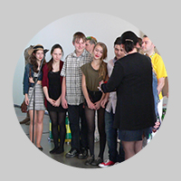

6. 5. 2013 | 10.45 | Radka Tesárková
Členové Ty-já-tru byli velmi úspěšní v městském kole Pražského poetického setkání (Dětská scéna) 2013. Za svoje recitátorské výkony získali hned pět ocenění a Matouš Martínek dokonce postupuje na červnovou národní přehlídku do Svitav. Všem moc gratulujeme!
V I. kategorii získali ocenění tito recitátoři (recitátoři v této kategorii ještě nepostupují na celostátní Dětskou scénu)
Za vynikající interpretaci textu
Ela Hejdová – Pavel Šrut, Hrozné věci
Za mimořádný divácký zážitek
Hugo Wiesner – Jiří Kolář, Jak se chytají zajíci
III. kategorie
Ocenění za výrazný projev v textu Zdeňka Jirotky
Anna Hrubá – Zd.Jirotka – Teta Kateřina a Milouš z knihy Saturnin a Jan Neruda – Balada rajská
ve IV.kategorii získali ocenění tito recitátoři:
Ocenění s postupem na celostátní přehlídku Dětská scéna 2013
Matouš Martínek s texty Tereza Boučková – Bikaři a Fráňa Šrámek – Účtování
Ocenění za výrazný projev v textu Jaroslava Haška
Anna Poláková – J.Hašek – Hovor s malým Mílou a M.Ostwoodová – Neoblíbené holky
29. 4. 2013 | 10.09 | Radka Tesárková
Postupové zkoušky do výběrových souborů Ty-já-tru (Před oponou, Štronzo, Za oponou a Šupitopresto) se konají 27. 5. od 14.30 hodin a 5. 6. také od 14.30 hodin v Divadle Radar. K postupkám si, prosím, připravte přednes básně či prózy zpaměti (starší si mohou navíc připravit ještě monolog), písničku lidovou či umělou (vždy však mějte v zásobě tu lidovou). Pokud hrajete na hudební nástroj (a chcete se pochlubit, co umíte), nezapomeňte ho vzít sebou. Čekají na vás i mluvní etudy, pohybové etudy a ještě…
Ke zkouškám je nutné se přihlásit u uměleckého šéfa DDS Ty-já-tr Radky Tesárkové (tel.: 724 350 605).
26. 4. 2013 | 12.05 | webmaster
Rádi bychom upozornili, že kapacita dětského letního tábora již byla zaplněna.
22. 4. 2013 | 9.49 | webmaster
Celosouborové představení, nazvané Ty a já jsme trrr, je už za dveřmi: proběhne v sobotu 27. dubna od 13.30 hodin v Žižkovském divadle Járy Cimrmana.
15. 4. 2013 | 11.06 | webmaster
DDS Ty-já-tr – Za oponou zvítězil v 8. ročníku celostátní umělecké soutěže To je hlína! (kategorie divadla). Cenu získal soubor za inscenaci z poezie Petra Nikla Blázníček. Gratulujeme!

{kind=link}
15. 4. 2013 | 11.06 | webmaster
DDS Ty-já-tr – Za oponou získal v krajském kole Pražského kalicha (Wolkerův Prostějov) v kategorii kolektivů za inscenaci Blázníček z poezie Petra Nikla Cenu za jevištní spontánnost, zvláště v pohybové složce.
15. 4. 2013 | 11.04 | webmaster
DDS Ty-já-tr – Za oponou získal v městském kole Otvírání Cenu za práci na inscenaci Kniha džunglí.
14. 4. 2013 | 11.37 | webmaster
Dnešní představení (14. 4.) se pro nemoc ruší. Děkujeme za pochopení. Příští repríza se koná v neděli 19.5. od 16.00.